Some visualizations
Now it is time to plot the data!
dt.data[, ix := date- min(date)]
dt2 <- data.table( ix=c(1:dt.data[, max(ix)]))
dt2 <- merge( dt2, dt.data, on="ix", all.x=TRUE)
dt2[ is.na(date), date := min(dt.data$date)+ix]
#dt2[ is.na(new_diag), new_diag := 1 ]
library(tidyr)## Warning: package 'tidyr' was built under R version 3.6.3dt2.fill <- tidyr::fill(dt2, "new_diag","new_hosp", .direction = "down")
rm(dt2)
ts.new_diag <- ts(as.data.table(dt2.fill)[ date >= cyclic.comp.st.date,
new_diag], frequency=7)
stl.log.new_diag <- stl(log(ts.new_diag), s.window = "periodic")No clear indication for a time lag between the two series. However cross correlation function is more biases towards negative lags as it should be: diagnostic sightly precedes hospitalizations.
ccf1 <- ccf(dt2.fill$new_diag, dt2.fill$new_hosp,
plot=FALSE)
df.ccf1 <- data.frame(ccf=ccf1$acf, lag=ccf1$lag)
ggplot(data.frame(ccf=ccf1$acf, lag=ccf1$lag), aes(lag, ccf))+
geom_path(color="blue", size=1)+
geom_vline(xintercept=0, linetype=2) +
ggtitle("COVID-19 MSK: CCF new cases number ~ new hospitalizations number")+
theme_bw()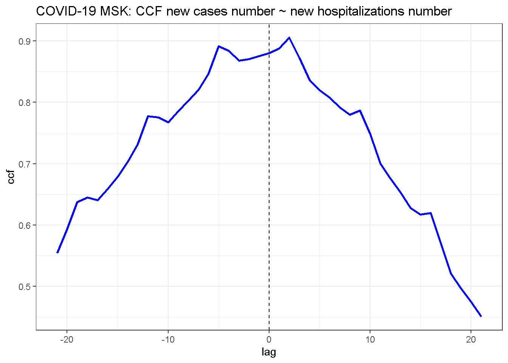
No indication for periodicity in the auto correlation function (same is in logs).
ggAcf(dt2.fill$new_diag)+
ggtitle("MSK Covid-19: ACF of the time series the number of new cases")+
theme_bw()
acf(dt2.fill$new_diag, type="partial")
##from monday
cyclic.comp.st.date <- make_date(2021,1,18)
weekdays(cyclic.comp.st.date)## [1] "понедельник"plot( stl.log.new_diag)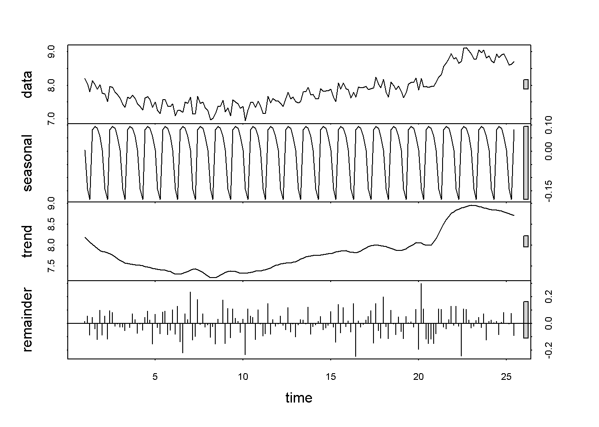
plot( exp( stl.log.new_diag$time.series[1:7,1]), type="l",
main="Mult. cyclic weekly conponent")
sd( stl.log.new_diag$time.series[,3])## [1] 0.09339668vec.weekday_coef <- exp( stl.log.new_diag$time.series[1:7,1])
dt.data[ , new_diag_corr := new_diag/vec.weekday_coef[wday(date, week_start=1)]]
plot( stl.log.new_diag$time.series[1:7,1] / sd( stl.log.new_diag$time.series[,3]),
main="Relative significance of seasonal component", type="l")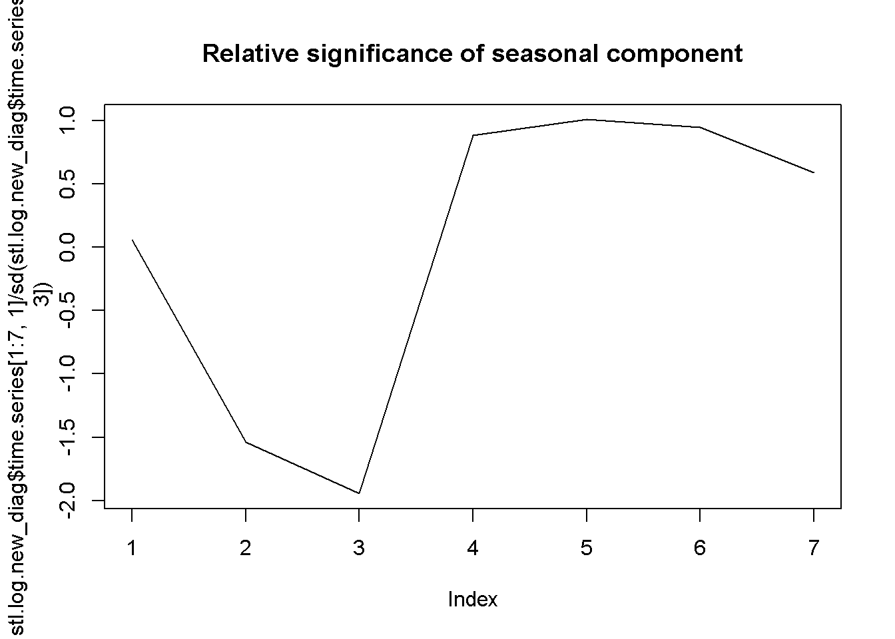
#Main+random (latest)
tail(exp( stl.log.new_diag$time.series[,2] + stl.log.new_diag$time.series[,3]))## Time Series:
## Start = c(24, 6)
## End = c(25, 4)
## Frequency = 7
## [1] 6816.947 7216.819 6520.525 6349.104 6740.795 5560.403tail(dt.data[, new_diag_corr])## [1] 6816.947 7216.819 6520.525 6349.104 6740.795 5560.403#Main component (latest)
tail( exp( stl.log.new_diag$time.series[,2] ))## Time Series:
## Start = c(24, 6)
## End = c(25, 4)
## Frequency = 7
## [1] 6747.856 6627.064 6508.435 6369.887 6234.289 6091.287#Main+random
plot( exp( stl.log.new_diag$time.series[,2] + stl.log.new_diag$time.series[,3]),
main="New patient withot cycle component")
plot( density(stl.log.new_diag$time.series[,3]), main="Random component density")
abline(v=0, lty=2)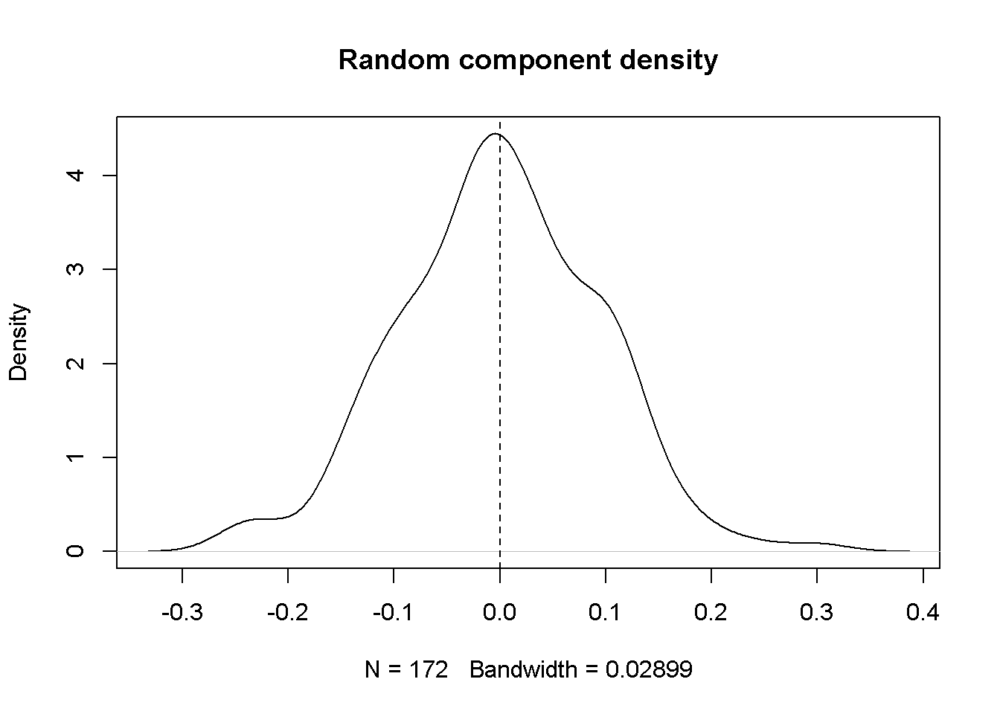
qqnorm(stl.log.new_diag$time.series[,3],
ylab="Standardized Residuals",
xlab="Normal Scores",
main="Random component Normality test")
qqline(stl.log.new_diag$time.series[,3])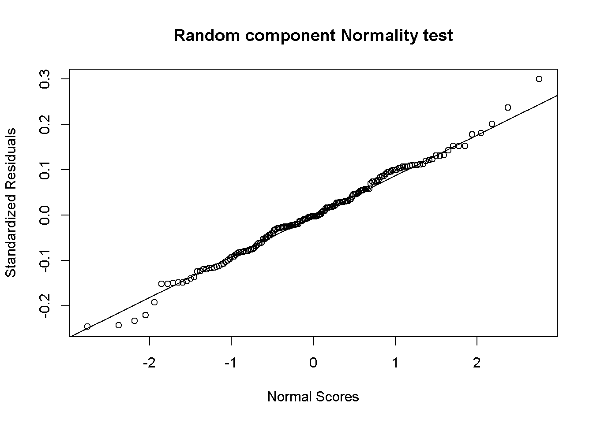
#Weekly cyclicity
sprintf("%.2f", vec.weekday_coef)## [1] "1.01" "0.87" "0.83" "1.09" "1.10" "1.09" "1.06"##
#Check
weekdays( make_date(2021,1,18))## [1] "понедельник"ts.new_hosp <- ts(as.data.table(dt2.fill)[ date >= cyclic.comp.st.date,
new_hosp], frequency=7)
stl.log.new_hosp <- stl(log(ts.new_hosp), s.window = "periodic")
plot( stl.log.new_hosp)
vec.weekday_coef_hosp <- exp( stl.log.new_hosp$time.series[1:7,1])
sprintf("%.2f", vec.weekday_coef_hosp)## [1] "0.89" "1.04" "1.01" "1.04" "1.04" "1.05" "0.94"dt.data[ , new_hosp_corr := new_hosp/vec.weekday_coef_hosp[wday(date, week_start=1)]]
ggplot( data.frame( x=c(1:7), cdiag = vec.weekday_coef, chosp = vec.weekday_coef_hosp),
aes( x= x, y = cdiag, color="Diag. cyclicity coef"))+
geom_path(size=1)+
geom_path(aes( x= x, y = chosp, color="Hosp. cyclicity coef"), size=1)+
xlab("Day of week")+
ylab("Coeff")+
ggtitle("New diag. and new hosp. cyclicity coeffs")
##Note this indicates (if true) that hosp are 5 days lagged relative to diag
ggplot(dt.data, aes(x=date, y=new_diag, color="Diagnosed"))+
geom_path(size=1)+
geom_path(aes(y=new_hosp, color="Hospitalized"), size=1)+
ggtitle("COVID-19 MSK: Number of newly hospitalized and diagnosed patiens")+
xlab("Date")+
scale_color_discrete(name="")+
ylab("Number of patients")+
theme_bw()+
scale_x_date(date_labels = "%d%-%m-%Y")
ggplot(dt.data, aes(x=date, y=curr_ivl, color="IVL"))+
geom_path(size=1)+
ggtitle("COVID-19 MSK: Number of IVL patiens")+
xlab("Date")+
scale_color_discrete(name="")+
ylab("Number of patients")+
theme_bw()+
scale_x_date(date_labels = "%d%-%m-%Y")## Warning: Removed 1 row(s) containing missing values (geom_path).
The ratio of the number of hospitalizations to the number of new cases grows with time. More and more sick people skip official medicine entirely.
#Build regression tree for stepwise approximation
dt.data[ , ratio.hosp.diagn := new_hosp/new_diag]
reg.tree <- rpart(ratio.hosp.diagn ~ date, data=dt.data,
control=rpart.control(cp = 0.02))
dt.data[ , hosp.rat.tree:= predict(reg.tree, dt.data)]
ggplot(dt.data, aes(x=date, y=new_hosp/new_diag, color="Data"))+
geom_path(size=1)+
geom_smooth(aes(color="Lowess"), size=1)+
ggtitle("COVID-19 MSK: Ratio of the number of new hospitalizations to\n the number of new registered (diagnosed) cases")+
xlab("Date")+
ylab("Ratio")+
geom_path(aes(y=hosp.rat.tree, color="Reg. tree"), size=1)+
scale_color_discrete(name="") +
theme_bw()+
scale_x_date(date_labels = "%d%-%m-%Y")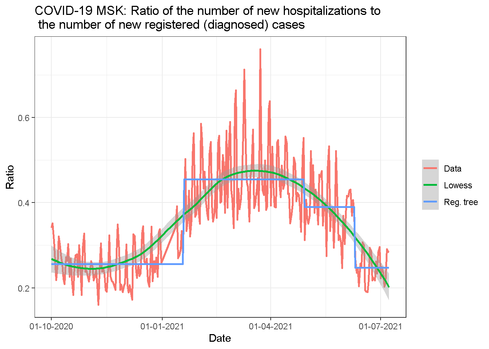
ggplot(dt.data, aes(x=date, y=new_hosp/shift(new_diag, 5, type="lag"), color="Data"))+
geom_path(size=1)+
geom_smooth(aes(color="Lowess"), size=1)+
ggtitle("COVID-19 MSK: Ratio of the number of new hospitalizations to\n the number of new registered (diagnosed) cases, 5d shift")+
xlab("Date")+
ylab("Ratio")+
scale_color_discrete(name="") +
theme_bw()+
scale_x_date(date_labels = "%d%-%m-%Y")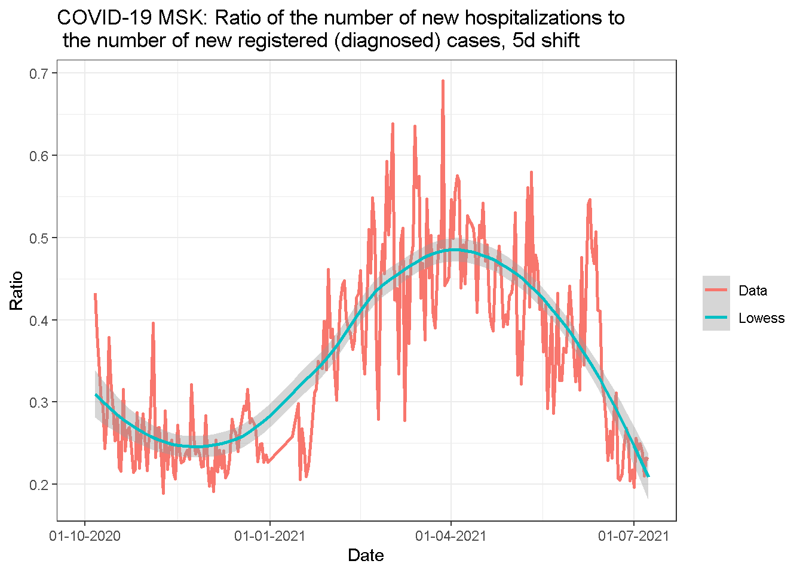
Let’s check the ratios by direct calculations:
display_table<-function(dd, ndigits=1, caption="") {
if( isTRUE(getOption('knitr.in.progress')) ) {
knitr::kable(dd,
caption=caption, digits=ndigits, format="html", align="c")
} else {
ndg <- getOption("digits")
options(digits = ndigits)
print(dd, digits = ndigits)
options(digits = ndg)
}
}
dt.average.hz.ratio <- data.table( `Date` = c("Before 2020-12-31", "After 2021-02-01"),
`Ratio`=
c(dt.data[ date <= as.Date("2020-12-31"), sum(new_hosp)/sum(new_diag)],
dt.data[ date > as.Date("2021-02-01"), sum(new_hosp)/sum(new_diag)]))
display_table(dt.average.hz.ratio, ndigits=2, caption="Ratio of the number of hospitalizations to the number of cases")| Date | Ratio |
|---|---|
| Before 2020-12-31 | 0.24 |
| After 2021-02-01 | 0.35 |
cbbPalette <- c("#000000", "#E69F00", "#56B4E9", "#009E73", "#F0E442", "#0072B2", "#D55E00", "#CC79A7")
ggplot(dt.data, aes(x=date, y=new_diag, color="Diagnosed"))+
geom_path(size=1)+
geom_path(aes(y=new_hosp/0.45, color="Hospitalized / 0.45"), size=1)+
ggtitle("COVID-19 MSK: Number of newly hospitalized (scaled) and diagnosed patients")+
xlab("Date")+
ylab("Number of patients")+
theme_bw()+
scale_x_date(date_labels = "%d%-%m-%Y")+
scale_color_manual(name="", breaks=c("Diagnosed", "Hospitalized / 0.45"),
values=cbbPalette[2:3])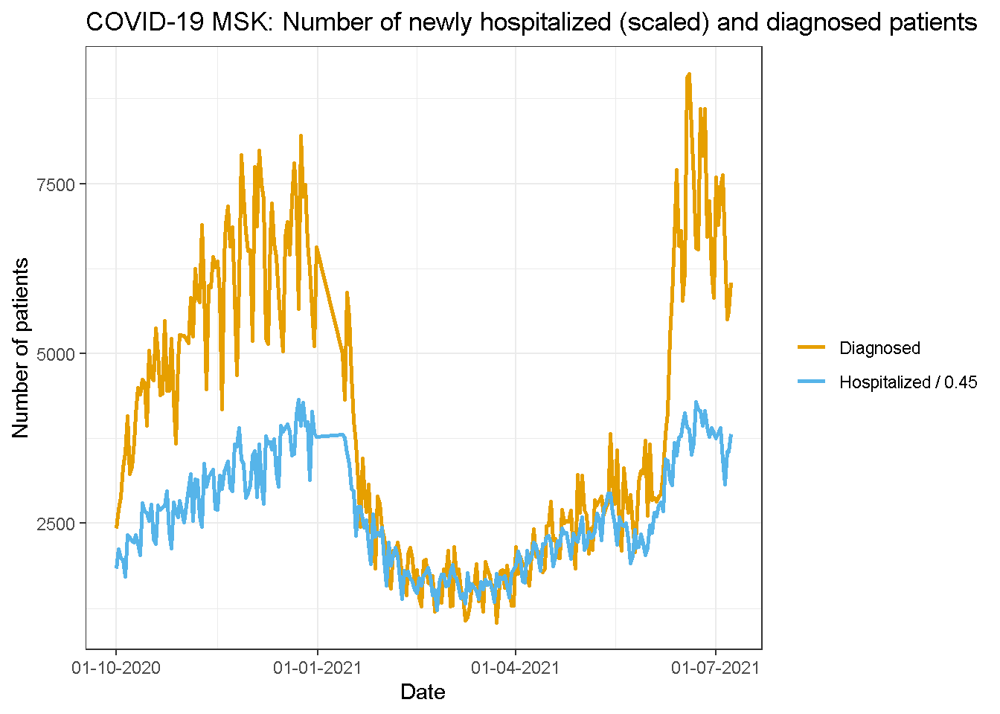
# geom_path(aes(y=new_diag_corr, color="Diagnosed,\nweekday corrected"), size=1)+
ggplot(dt.data, aes(x=date, y=new_diag, color="Diagnosed"))+
geom_path(size=0.5)+
geom_path(aes(y=new_diag_corr, color="Diagnosed,\nweekday corrected"), size=1)+
ggtitle("COVID-19 MSK: Week cycle corrected number of newly diagnosed patients")+
geom_smooth(aes(y=new_diag_corr, color="Decycled, loess"), span=0.1)+
xlab("Date")+
ylab("Number of patients")+
theme_bw()+
scale_x_date(date_labels = "%d%-%m-%Y")+
scale_color_discrete(name="")## `geom_smooth()` using method = 'loess' and formula 'y ~ x'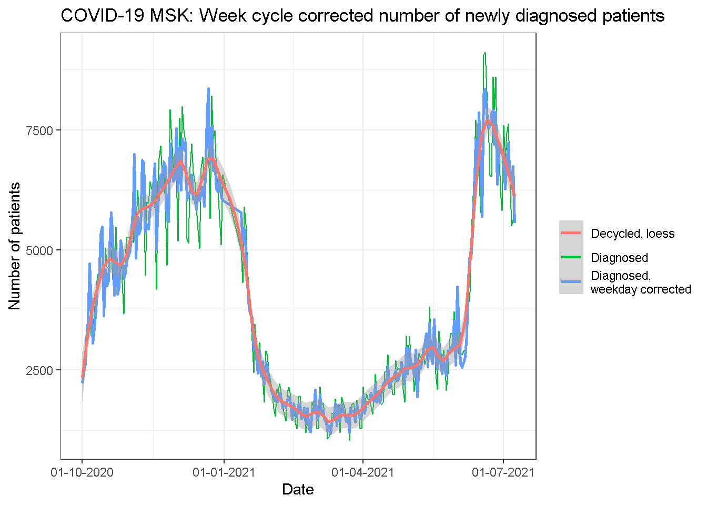
ggplot(dt.data, aes(x=date, y=new_diag, color="Diagnosed"))+ylim(1,1e4)+
geom_path(size=0.5)+
geom_path(aes(y=new_diag_corr, color="Diagnosed,\nweekday corrected"), size=1)+
ggtitle("COVID-19 MSK: Week cycle corrected number of newly diagnosed patients\n(lof scale)")+
geom_smooth(aes(y=new_diag_corr, color="Decycled, loess"), span=0.1)+
xlab("Date")+
ylab("Number of patients")+
theme_bw()+
scale_x_date(date_labels = "%d%-%m-%Y")+
scale_color_discrete(name="")+scale_y_log10()## Scale for 'y' is already present. Adding another scale for 'y', which will
## replace the existing scale.
## `geom_smooth()` using method = 'loess' and formula 'y ~ x'
ggplot(dt.data[ date>=make_date(2021,5,1)], aes(x=date, y=new_diag, color="Diagnosed"))+ylim(1,1e4)+
geom_path(size=0.5)+
geom_path(aes(y=new_diag_corr, color="Diagnosed,\nweekday corrected"), size=1)+
ggtitle("COVID-19 MSK: Week cycle corrected number of newly diagnosed patients\n(zoomed)")+
geom_smooth(aes(y=new_diag_corr, color="Decycled, loess"), span=0.25)+
xlab("Date")+
ylab("Number of patients")+
theme_bw()+
scale_x_date(date_labels = "%d%-%m-%Y")+
scale_color_discrete(name="")## `geom_smooth()` using method = 'loess' and formula 'y ~ x'
ggplot(dt.data, aes(x=date, y=new_hosp, color="N. hosp."))+
geom_path(size=0.5)+
geom_path(aes(y=new_hosp_corr, color="N. hosp.,\ndecycled"), size=1)+
ggtitle("COVID-19 MSK: Cycle corrected number of newly hospitalized patients")+
geom_smooth(aes(y=new_hosp_corr, color="N. hosp., decycled,\nloess (0.1)"), span=0.1, size=1)+
xlab("Date")+
ylab("Number of patients")+
theme_bw()+
scale_x_date(date_labels = "%d%-%m-%Y")+
scale_color_discrete(name="")## `geom_smooth()` using method = 'loess' and formula 'y ~ x'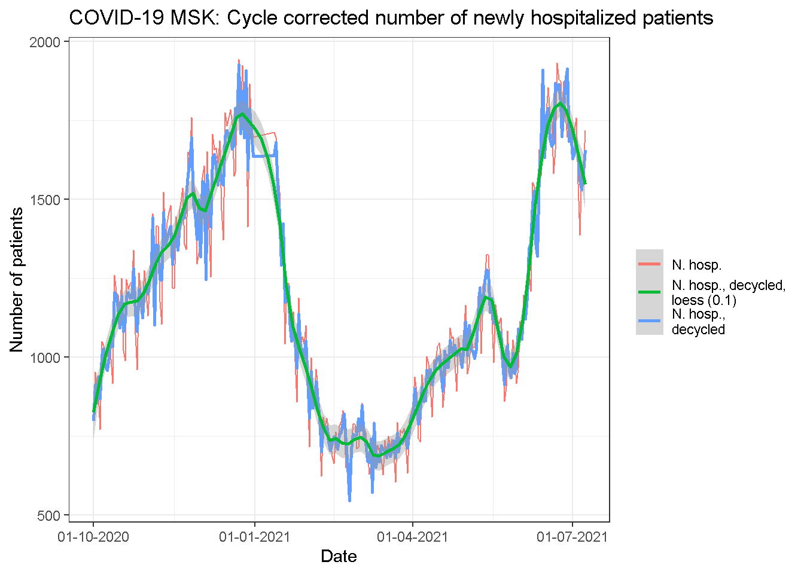
ggplot(dt.data[date>make_date(2021,5,1)], aes(x=date, y=new_hosp, color="N. hosp."))+
geom_path(size=0.5)+
geom_path(aes(y=new_hosp_corr, color="N. hosp.,\ndecycled"), size=1)+
ggtitle("COVID-19 MSK: Cycle corrected number of newly hospitalized patients")+
geom_smooth(aes(y=new_hosp_corr, color="N. hosp., decycled,\nloess (0.25)"), span=0.25, size=1)+
xlab("Date")+
ylab("Number of patients")+
theme_bw()+
scale_x_date(date_labels = "%d%-%m-%Y")+
scale_color_discrete(name="")## `geom_smooth()` using method = 'loess' and formula 'y ~ x'
ggplot(dt.data, aes(x=date, y=new_diag, color="Diagnosed"))+
geom_smooth(span=0.2)+
geom_smooth(aes(y=new_hosp/0.45, color="Hospitalized / 0.45"), span=0.2)+
ggtitle("COVID-19 MSK: Number of newly hospitalized (scaled) and\ndiagnosed patiens (loess, span=0.2)")+
xlab("Date")+
scale_color_discrete(name="")+
ylab("Number of patients")+
theme_bw()+
scale_x_date(date_labels = "%d%-%m-%Y")## `geom_smooth()` using method = 'loess' and formula 'y ~ x'
## `geom_smooth()` using method = 'loess' and formula 'y ~ x'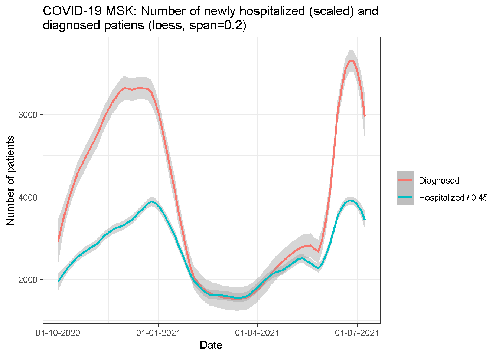
ggplot(dt.data, aes(x=new_diag, y=new_hosp))+
geom_point()+
geom_smooth(span=0.2)+
ggtitle("COVID-19 MSK: Number of newly hospitalized vs diagnosed patiens")+
xlab("New cases")+
scale_color_discrete(name="")+
ylab("New hospitalizations")+
theme_bw()## `geom_smooth()` using method = 'loess' and formula 'y ~ x'
ggplot(dt.data, aes(x=log(new_diag), y=log(new_hosp)))+
geom_point()+
geom_smooth(span=0.4)+
ggtitle("COVID-19 MSK: Number of newly hospitalized vs diagnosed patiens")+
xlab("New cases")+
scale_color_discrete(name="")+
ylab("New hospitalizations")+
theme_bw()## `geom_smooth()` using method = 'loess' and formula 'y ~ x'
lm1 <- lm(log(new_hosp) ~ log(new_diag),data=dt.data)
summary( lm1)##
## Call:
## lm(formula = log(new_hosp) ~ log(new_diag), data = dt.data)
##
## Residuals:
## Min 1Q Median 3Q Max
## -0.39630 -0.09274 -0.00174 0.11004 0.30156
##
## Coefficients:
## Estimate Std. Error t value Pr(>|t|)
## (Intercept) 3.09652 0.12370 25.03 <2e-16 ***
## log(new_diag) 0.48310 0.01519 31.80 <2e-16 ***
## ---
## Signif. codes: 0 '***' 0.001 '**' 0.01 '*' 0.05 '.' 0.1 ' ' 1
##
## Residual standard error: 0.1423 on 266 degrees of freedom
## Multiple R-squared: 0.7918, Adjusted R-squared: 0.791
## F-statistic: 1011 on 1 and 266 DF, p-value: < 2.2e-16qqnorm(residuals(lm1))
qqline(residuals(lm1))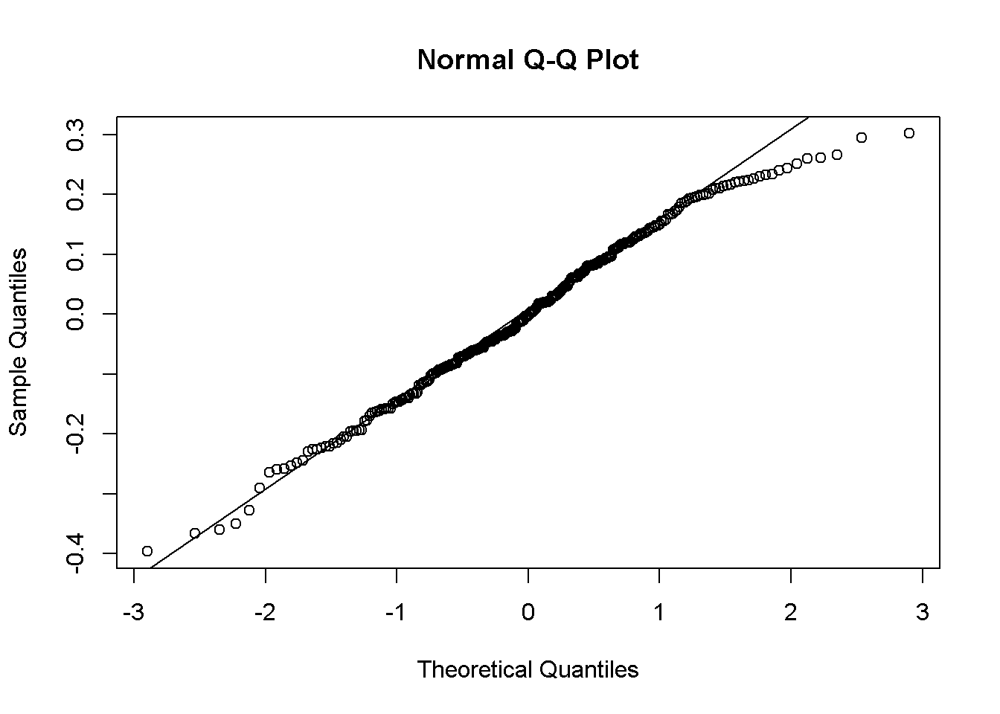
# ggplot(dt.data, aes(x=shift(new_diag, 7, "lag"), y=new_hosp))+
# geom_point()+
# geom_smooth(span=0.4)+
# ggtitle("COVID-19 MSK: Number of newly hospitalized vs diagnosed patiens, lag 7")+
# xlab("New cases")+
# scale_color_discrete(name="")+
# ylab("New hospitalizations")+
# theme_bw()
ggplot(dt.data, aes(x=date, y=(new_diag/shift(new_diag,7)-1)), color="Data")+
geom_path()+
geom_smooth(span=0.1)+
ggtitle("COVID-19 MSK: Wow change in the number of newly diagnosed patiens")+
xlab("Date")+
scale_color_discrete(name="")+
ylab("(N / lag(N,7)) -1")+
theme_bw()+
scale_x_date(date_labels = "%d%-%m-%Y")## `geom_smooth()` using method = 'loess' and formula 'y ~ x'## Warning: Removed 7 rows containing non-finite values (stat_smooth).## Warning: Removed 7 row(s) containing missing values (geom_path).
library(zoo)## Warning: package 'zoo' was built under R version 3.6.3##
## Attaching package: 'zoo'## The following objects are masked from 'package:base':
##
## as.Date, as.Date.numericrsum_cumsum <- function(x, n = 7L) {
tail(cumsum(x) - cumsum(c(rep(0, n), head(x, -n))), -n + 1)
}
rsum_ratio <- function(x) {
y <- rsum_cumsum(x)
return( y/shift(y,7))
}
length( dt.data$new_diag)## [1] 268length( rsum_cumsum(dt.data$new_diag))## [1] 262length( rsum_ratio(dt.data$new_diag)-1)## [1] 262length(dt.data$date)## [1] 268dt.data[ , length(date[7:length(date)])]## [1] 262dt.data[ , new_diag_week_av := (cumsum(new_diag)- shift(cumsum(new_diag),7 ))/7]
ggplot(dt.data, aes(x=date, y=new_diag_week_av/shift(new_diag_week_av,7)-1, color="Data"))+
geom_path()+
ggtitle("COVID-19 MSK: Wow change in the number of newly diagnosed patiens\n(week over week)")+
xlab("Date")+
scale_color_discrete(name="")+
ylab("N(7d)/lag(N(7d),7)-1")+
theme_bw()+
scale_x_date(date_labels = "%d%-%m-%Y")## Warning: Removed 14 row(s) containing missing values (geom_path).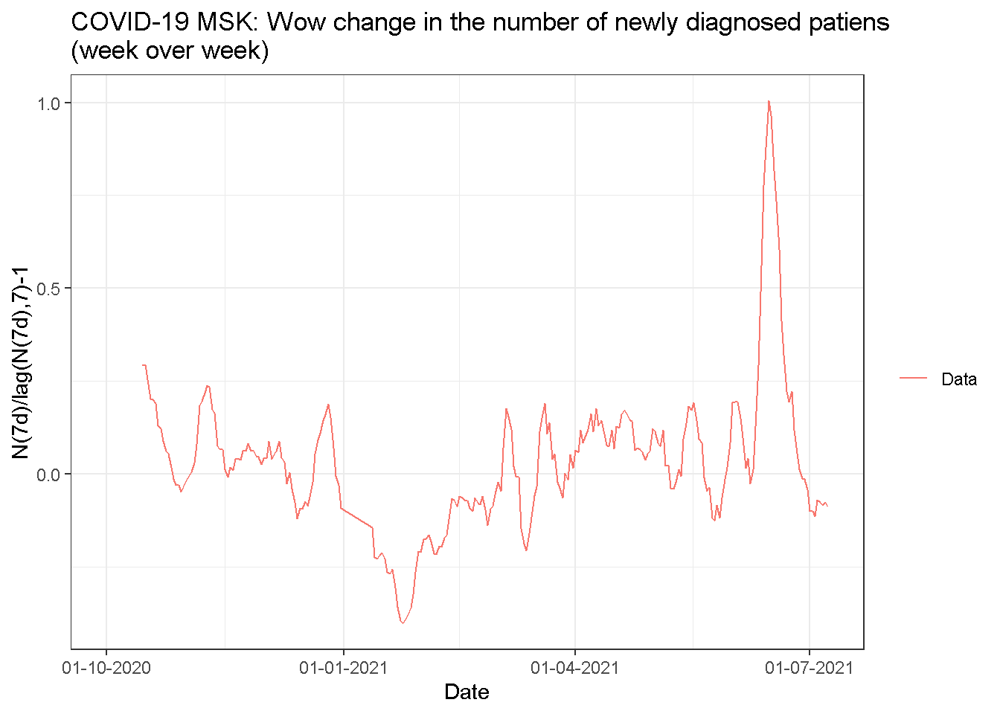
tail(dt.data[,.(date, new_diag, new_diag_corr, new_diag_week_av, new_hosp, new_hosp_corr)],7)## date new_diag new_diag_corr new_diag_week_av new_hosp new_hosp_corr
## 1: 2021-07-02 6893 6273.739 7012.714 1719 1646.555
## 2: 2021-07-03 7446 6816.947 6848.143 1756 1677.497
## 3: 2021-07-04 7624 7216.819 6976.857 1548 1641.660
## 4: 2021-07-05 6557 6520.525 6878.429 1385 1560.852
## 5: 2021-07-06 5498 6349.104 6776.857 1598 1529.874
## 6: 2021-07-07 5621 6740.795 6748.000 1601 1586.684
## 7: 2021-07-08 6040 5560.403 6525.571 1717 1654.742